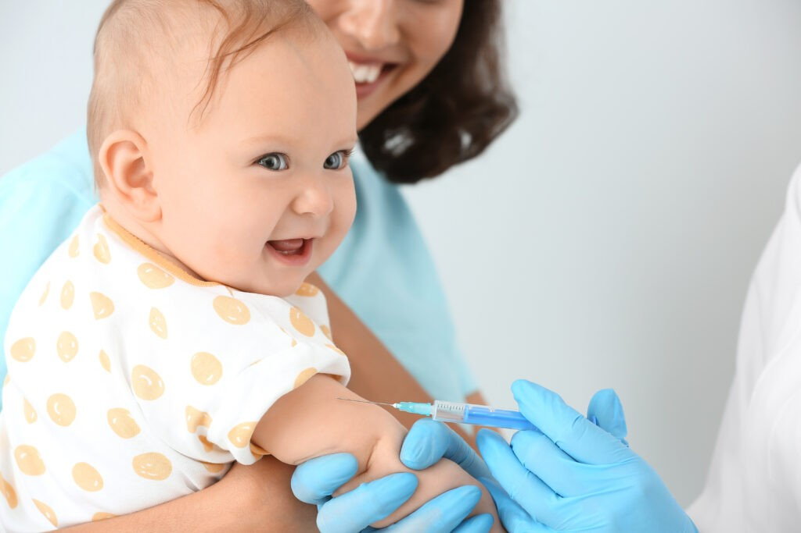

About us
আমাদের উদ্দেশ্য
 আমরা নিশ্চিত করতে চাই যে একটা শিশু যেন তার জন্মের পরে প্রতিটি টিকা পেয়ে থাকে।
শিশু তার জন্মের ১৬ মাস বয়সের মধ্যে টিকা গুলো দেয়া সম্পূর্ণ করবে।
সময়সূচি অনুযায়ী সবগুলো টিকা নিলে আপনার শিশু মারাত্মক সংক্রামক রোগ সমূহ থেকে রক্ষা পাবে। যক্ষা, পোলিও, ডিফথেরিয়া, হুপিং কাশি, ধনুষ্টংকার, হেপাটাইটিস-বি, হিমোফাইলাস ইনফ্লুয়েঞ্জা-বি জনিত রোগ, হাম, নিউমোকক্কাল জনিত নিউমোনিয়া, রুবেলা এর মতো মারাত্মক সংক্রামক রোগসমূহের বিরুদ্ধে রোগ প্রতিরোধ ক্ষমতা তৈরি করতে পারে।
কিভাবে ভ্যাকসিন সাহায্য করে
ভ্যাকসিনগুলিতে একটি নির্দিষ্ট জীবের (অ্যান্টিজেন) দুর্বল বা নিষ্ক্রিয় অংশ থাকে যা শরীরের মধ্যে একটি ইমিউন প্রতিক্রিয়া ট্রিগার করে। নতুন ভ্যাকসিনে অ্যান্টিজেনের পরিবর্তে অ্যান্টিজেন তৈরির ব্লুপ্রিন্ট রয়েছে। ভ্যাকসিনটি নিজেই অ্যান্টিজেন দিয়ে তৈরি হোক বা ব্লুপ্রিন্ট যাতে শরীর অ্যান্টিজেন তৈরি করে তা নির্বিশেষে, এই দুর্বল সংস্করণটি ভ্যাকসিন গ্রহণকারী ব্যক্তির মধ্যে রোগের কারণ হবে না, তবে এটি তাদের ইমিউন সিস্টেমকে অনেক বেশি প্রতিক্রিয়া জানাতে প্ররোচিত করবে।
একটি ভ্যাকসিন হল জীবের একটি ক্ষুদ্র দুর্বল অ-বিপজ্জনক অংশ এবং এতে অ্যান্টিজেনের কিছু অংশ অন্তর্ভুক্ত থাকে। এটা যথেষ্ট যে আমাদের শরীর নির্দিষ্ট অ্যান্টিবডি তৈরি করতে শিখতে পারে। তারপরে যদি শরীর বাস্তব জীবের অংশ হিসাবে পরে আসল অ্যান্টিজেনের মুখোমুখি হয়, তবে এটি ইতিমধ্যেই জানে কিভাবে এটিকে পরাজিত করতে হয়।
কিছু ভ্যাকসিনের একাধিক ডোজ প্রয়োজন, সপ্তাহ বা মাসের ব্যবধানে। দীর্ঘজীবী অ্যান্টিবডি তৈরি এবং মেমরি কোষগুলির বিকাশের জন্য এটি কখনও কখনও প্রয়োজন হয়। এইভাবে, শরীরকে নির্দিষ্ট রোগ-সৃষ্টিকারী জীবের সাথে লড়াই করার জন্য প্রশিক্ষিত করা হয়, রোগজীবাণুটির স্মৃতিশক্তি তৈরি করে যাতে ভবিষ্যতে এটির সংস্পর্শে এলে দ্রুত এর সাথে লড়াই করা যায়।
শরীরের স্বাভাবিক প্রতিক্রিয়া
একবার অ্যান্টিজেন-নির্দিষ্ট অ্যান্টিবডি তৈরি হয়ে গেলে, তারা রোগজীবাণু ধ্বংস করতে এবং রোগ বন্ধ করতে বাকি ইমিউন সিস্টেমের সাথে কাজ করে। একটি প্যাথোজেনের অ্যান্টিবডি সাধারণত অন্য প্যাথোজেনের বিরুদ্ধে রক্ষা করে না যখন দুটি প্যাথোজেন একে অপরের সাথে খুব মিল থাকে, যেমন কাজিন। শরীর একবার অ্যান্টিজেনের প্রাথমিক প্রতিক্রিয়ায় অ্যান্টিবডি তৈরি করে, এটি অ্যান্টিবডি-উত্পাদক স্মৃতি কোষও তৈরি করে, যা অ্যান্টিবডি দ্বারা প্যাথোজেন পরাজিত হওয়ার পরেও জীবিত থাকে। যদি শরীর একই প্যাথোজেনের সাথে একাধিকবার সংস্পর্শে আসে, তবে অ্যান্টিবডি প্রতিক্রিয়া প্রথমবারের তুলনায় অনেক দ্রুত এবং বেশি কার্যকর কারণ মেমরি কোষগুলি সেই অ্যান্টিজেনের বিরুদ্ধে অ্যান্টিবডি পাম্প করার জন্য প্রস্তুত থাকে।
এর মানে হল যে ব্যক্তি যদি ভবিষ্যতে বিপজ্জনক প্যাথোজেনের সংস্পর্শে আসে, তবে তাদের ইমিউন সিস্টেম অবিলম্বে প্রতিক্রিয়া জানাতে সক্ষম হবে, রোগ থেকে রক্ষা করবে।
যখন একটি নতুন প্যাথোজেন বা রোগ আমাদের শরীরে প্রবেশ করে, তখন এটি একটি নতুন অ্যান্টিজেন প্রবর্তন করে। প্রতিটি নতুন অ্যান্টিজেনের জন্য, আমাদের শরীরকে একটি নির্দিষ্ট অ্যান্টিবডি তৈরি করতে হবে যা অ্যান্টিজেনকে ধরে ফেলতে পারে এবং প্যাথোজেনকে পরাস্ত করতে পারে।